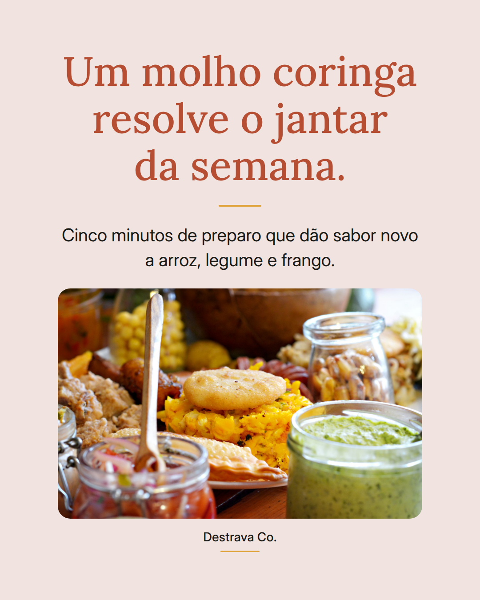
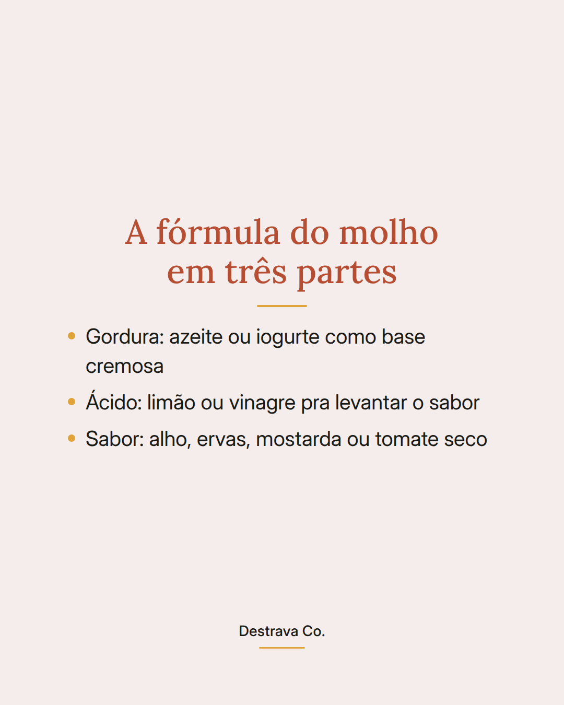
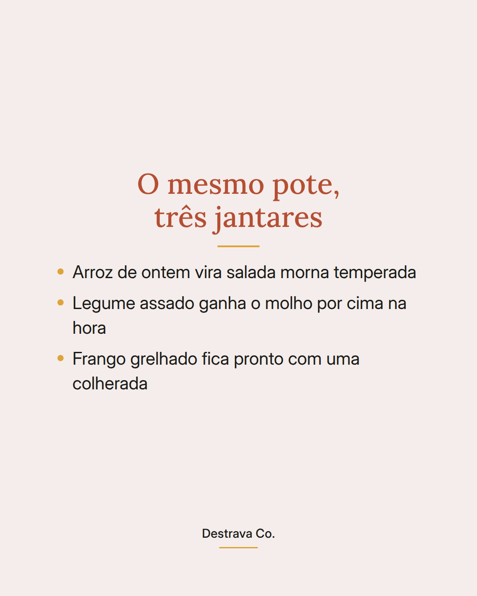
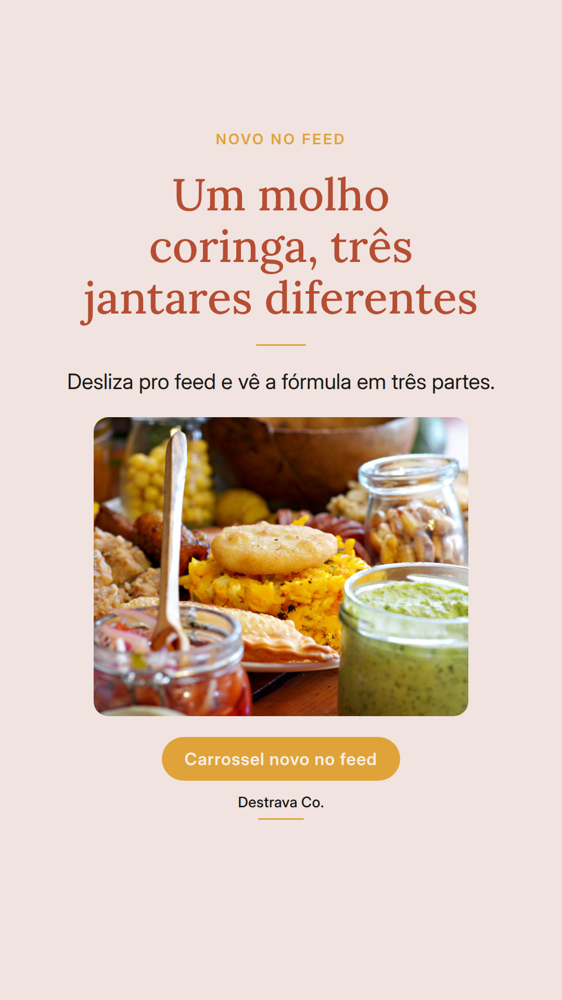
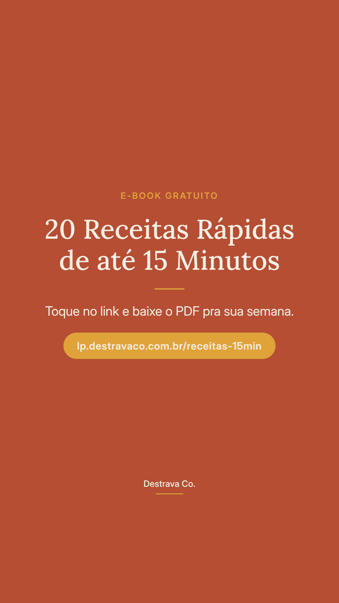

Molho coringa pronto na geladeira é o atalho que salva o jantar de quinta-feira.
Receita rápida de verdade é aquela que aproveita o que já está feito. Com um pote de molho pronto, arroz de ontem vira salada morna, legume assado ganha vida e frango grelhado deixa de ser sem graça.
A fórmula é simples: uma gordura pra dar corpo, um ácido pra levantar e algo de sabor forte pra dar caráter. Azeite, limão e alho já resolvem. Iogurte, vinagre e mostarda também.
Faz num domingo qualquer, guarda em pote com tampa e vai usando ao longo da semana. É o tipo de preparo que rende sem pedir tempo extra.
Salva pra lembrar na hora das compras e manda pra quem sempre chega em casa sem ideia de jantar. Se quiser mais atalhos desse tipo, o PDF com 20 receitas rápidas de até 15 minutos está te esperando.